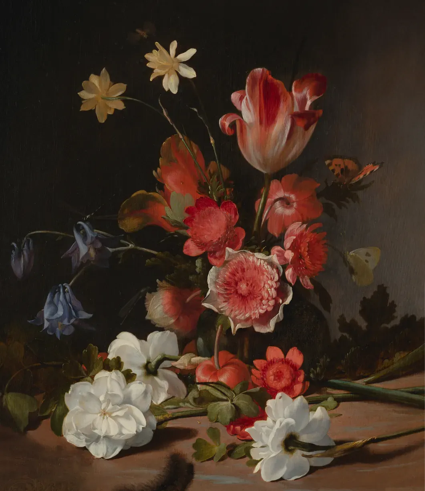

Visions of the Renaissance: Uniting History and Creativity
Join us as we celebrate the legacy of the Renaissance through our engaging exhibitions. Experience the awe-inspiring beauty of this transformative period and revel in the genius of the artists who forever changed the course of art.